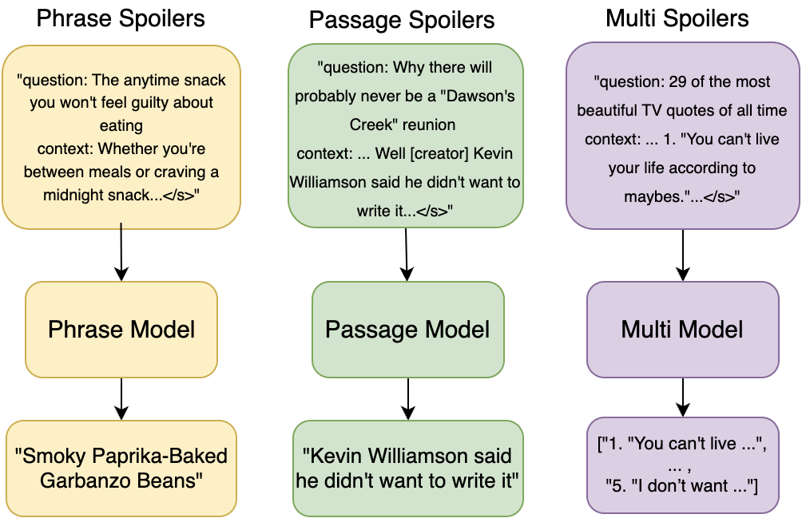
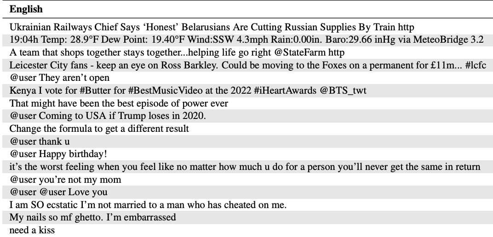
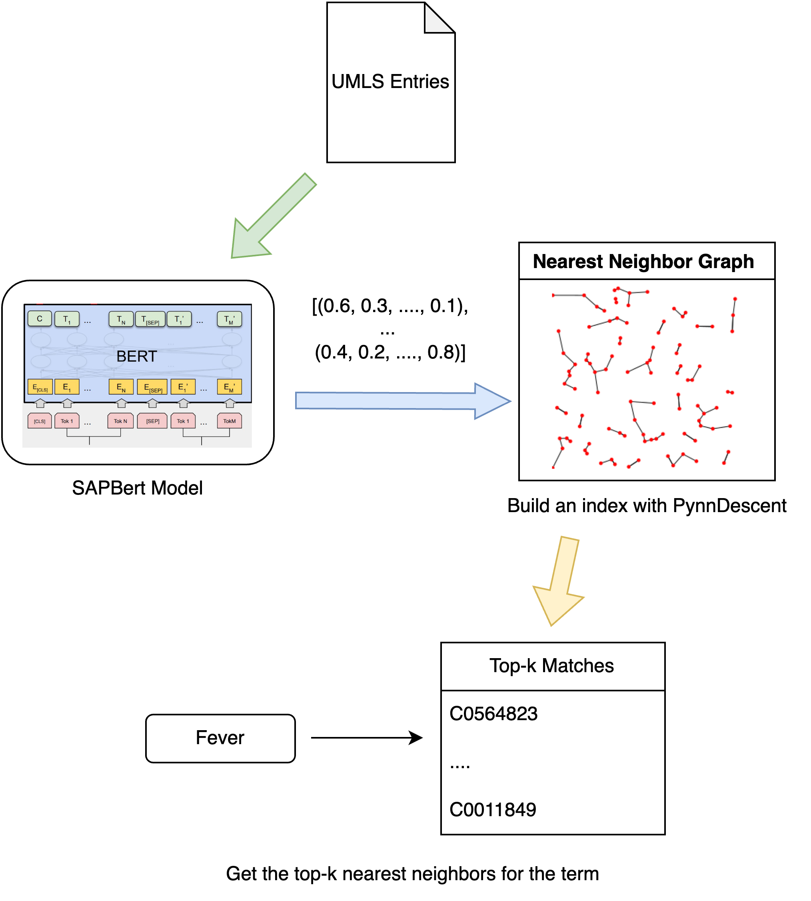

Research
My long-term research interests are:
- Long-Context Modeling: Developing architectures and algorithms to improve reasoning over long sequences, focusing on structured and hierarchical information representation, with applications in conversational AI and code generation.
- Automating Scientific Discovery: Exploring AI systems that combine causal reasoning with structured world models to form hypotheses, design experiments, and build cumulative scientific knowledge.
- Interpretability and Evaluation: Creating frameworks to analyze and improve how language models process information, ensuring reliability, consistency, and adaptability to new tasks.
|
|

|
Tackling Clickbait with Seq2Seq Models
Tugay Bilgis,
Nimet Beyza Bozdag,
Steven Bethard
SemEval workshop at ACL, 2023
|
|

|
Multilingual Tweet Intimacy Analysis with XLM-T
Nimet Beyza Bozdag,
Tugay Bilgis,
Steven Bethard
SemEval workshop at ACL, 2023
|
|

|
Revisiting Medical Concept Normalization: A Comparative Analysis Of Transformer-Based Models And Search Engine Approaches
Tugay Bilgis
Undergraduate Thesis, 2024
|
Teaching
I was a teaching assistant for the following courses at the University of Arizona:
-
CSC 380: Principles of Data Science
(Spring'23, Spring'24)
-
CSC 144: Discrete Mathematics for Computer Science I
(Spring'22, Fall'23)
-
CSC 120: Intro to Computer Programming II
(Fall'21)
|
Personal
I love playing and watching soccer and I'm a huge Galatasaray fan.
I enjoy running, hiking in the beautiful Pacific Northwest, and playing online chess occasionally.
|
|
{kind=link}